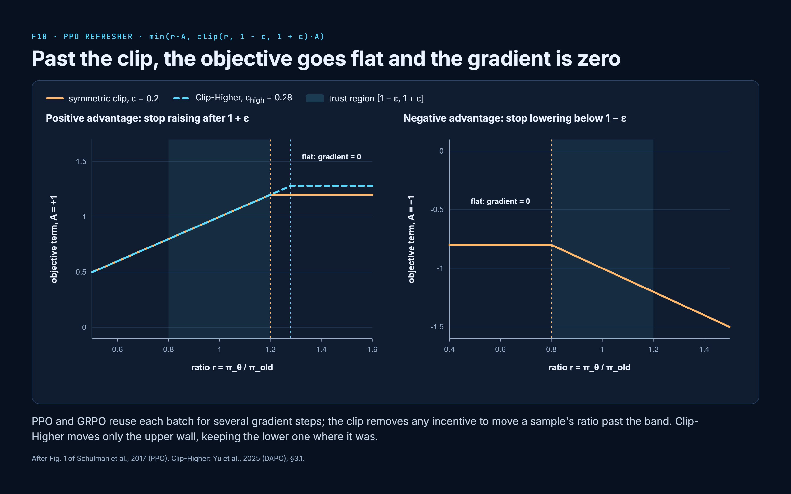
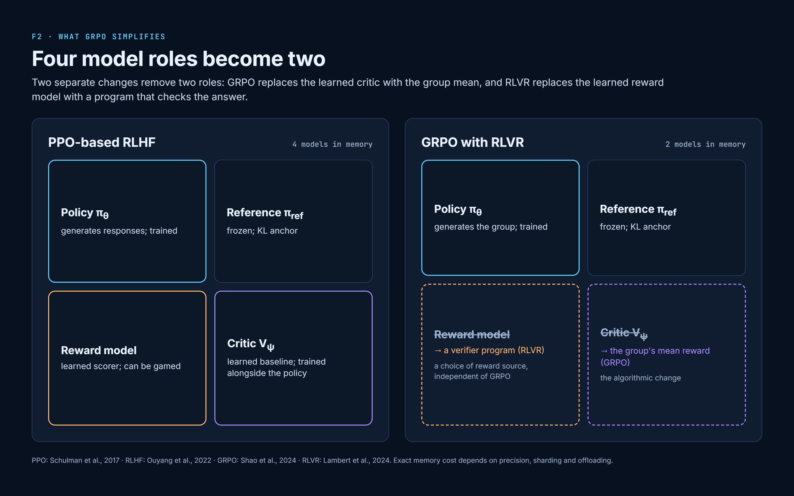
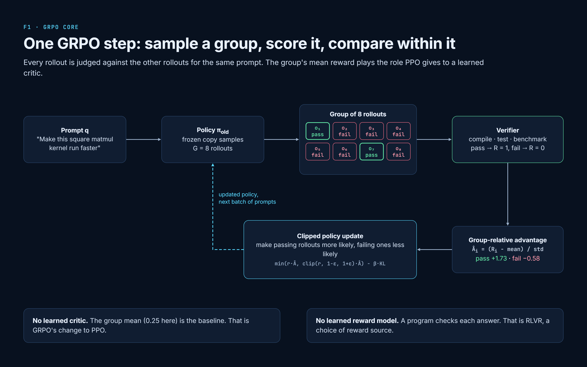
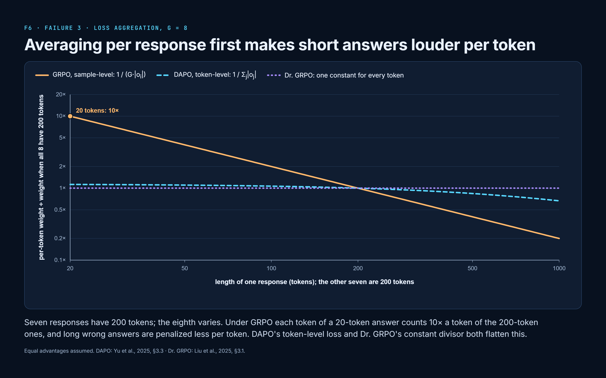
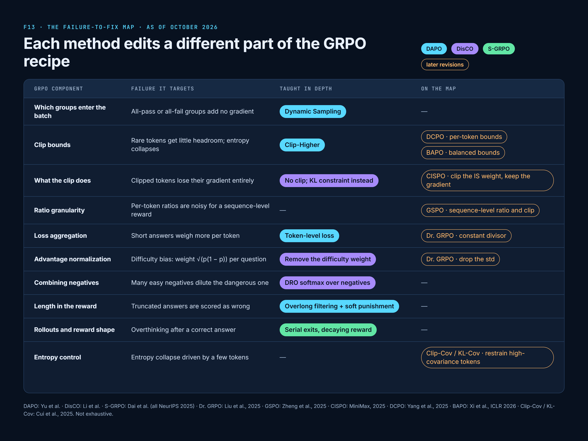

#N, to jump to slide NGRPO
Group Relative Policy Optimization: how a group of sampled answers replaces PPO's learned critic — and three places where the resulting learning signal breaks.
In one sentence: for each prompt, sample a group of $G$ responses, score each with a verifier, standardize the rewards within the group, and update the policy with PPO's clipped objective so that above-average responses become more likely and below-average responses less likely. The group's mean reward replaces PPO's learned critic as the baseline.
Assumed background: policies, rewards, and the idea of a policy gradient. The two refresher slides cover policy gradients and PPO; skip them if you already know PPO.
Acronyms in this deck. GRPO Group Relative Policy Optimization (Shao et al., 2024) · PPO Proximal Policy Optimization (Schulman et al., 2017) · RL reinforcement learning · RLHF RL from human feedback (Ouyang et al., 2022) · RLVR RL with verifiable rewards (Lambert et al., 2024) · SFT supervised fine-tuning · KL Kullback–Leibler divergence · GAE generalized advantage estimation · DAPO, DisCO and S-GRPO are placed on the response map. Full references: last slide.
Why it matters. GRPO was introduced in DeepSeekMath (Shao et al., 2024). It is used in the RL stages of DeepSeek-V3 and DeepSeek-R1 (DeepSeek-AI, 2024; 2025) and in Qwen3's reasoning RL (Qwen Team, 2025), and TRL, verl and OpenRLHF all implement it.
Why not just imitate correct answers?
That creates three limits for reasoning and code:
1 · Demonstration ceiling
SFT reinforces strategies present in its demonstrations; it does not directly search for a better unseen solution.
2 · Many answers are right
Many token sequences implement the same correct behavior, but single-reference training penalizes valid alternatives.
3 · Distribution shift
At generation time the policy conditions on its own prefixes, including mistakes that were absent from the demonstrations.
Details
An executable verifier supplies the reward
Running example: the policy writes a GPU kernel (a small program that computes, e.g., a matrix product). We compile, test, and benchmark it:
- Fails to compile, or produces wrong numbers → reward 0
- Correct and at least 1.2× faster than the PyTorch reference → reward 1
02_failure_lab.ipynb shows one).no learned reward model in this loop
RLVR: term introduced with Tülu 3 (Lambert et al., 2024). KernelBench: Ouyang et al., ICML 2025 (task source for the running example).
Policy gradient: make better-than-expected answers more likely
For a prompt $s$ and an answer $a\sim\pi_\theta(\cdot\mid s)$ with reward $R$, the policy-gradient theorem (REINFORCE) gives
- $\nabla_\theta\log\pi_\theta(a\mid s)$ is the direction that makes answer $a$ more likely.
- $b$ is a baseline: any quantity that does not depend on $a$. It leaves the expected gradient unchanged, because $\mathbb{E}_{a}[\nabla_\theta\log\pi_\theta(a\mid s)]=0$, but it lowers the variance of the estimate.
- $A=R-b$ is the advantage. With $b=V(s)=\mathbb{E}[R\mid s]$, $A>0$ means "better than expected for this prompt".
Details
Worked example
The policy solves this kernel task 40% of the time, so $V(s)=0.4$.
| Outcome | Reward | Advantage | Effect on $\log\pi_\theta(a\mid s)$ |
|---|---|---|---|
| passes | 1 | $+0.6$ | increased |
| fails | 0 | $-0.4$ | decreased |
With $b=0$ instead, failed answers would get zero weight and every passing answer would be pushed up by the full reward; the estimate is unbiased but much noisier. Notebook §1.3 measures the variance reduction.
REINFORCE: Williams, 1992. Policy-gradient theorem and baselines: Sutton & Barto, Reinforcement Learning: An Introduction, 2nd ed., 2018, ch. 13.
PPO reuses each batch for several updates and clips the ratio

Details and the interactive chart
Proximal Policy Optimization (PPO) takes several gradient steps on rollouts sampled from a frozen copy $\pi_{\text{old}}$. The importance ratio corrects for the policy having moved, and clipping removes the incentive to move it far:
- $A>0$: the objective grows with $r$ only up to $1+\varepsilon$. Beyond that it is flat, so that sample's gradient is zero.
- $A<0$: the objective grows as $r$ falls, but only down to $1-\varepsilon$.
- In RLHF, $A$ comes from a learned critic $V_\psi(s)$ (typically via GAE), and a KL penalty keeps $\pi_\theta$ close to a frozen reference policy.
$\varepsilon=0.2$; the shaded band is the clip range $[1-\varepsilon,\,1+\varepsilon]$ (cf. Fig. 1 of Schulman et al., 2017).
PPO: Schulman et al., 2017. GAE: Schulman et al., ICLR 2016. RLHF with PPO: Ouyang et al., 2022.
PPO-based RLHF uses four model roles

Details and the interactive chart
The standard PPO-based RLHF recipe combines:
- Policy $\pi_\theta$ — generates responses and is updated
- Reference policy $\pi_{\text{ref}}$ — frozen; anchors the update through a KL penalty
- Learned reward model — scores each response
- Learned critic $V_\psi$ — estimates the baseline; trained alongside the policy
Remove the critic: the group supplies the baseline

Details and the interactive chart
For each prompt $q$, GRPO samples a group $o_1,\dots,o_G\sim\pi_{\text{old}}(\cdot\mid q)$, scores each response, and standardizes the rewards within the group:
Every token of response $o_i$ uses this same $\hat A_i$ inside PPO's clipped objective (the full objective is in the DAPO deck). Two distinct simplifications follow:
- GRPO replaces the learned critic with the group mean — an algorithmic change.
- On verifiable tasks (RLVR), a programmatic checker replaces the learned reward model — a choice of reward source, independent of GRPO.
GRPO: Shao et al., 2024 (DeepSeekMath); DeepSeek-AI, 2025 (DeepSeek-R1).
Score 8 rollouts and compute their advantages
Eight rollouts for the same kernel task: two are correct and fast (reward 1), six fail (reward 0). The chart shows each rollout's advantage $\hat A_i$. Click a rollout to flip its reward and recompute the group statistics.
With 2 of 8 correct, the mean reward is 0.25 and the standard deviation is 0.433. Each correct rollout gets $\hat A=(1-0.25)/0.433=+1.73$ and each incorrect one gets $(0-0.25)/0.433=-0.58$. The advantages sum to zero ($2\times1.73=6\times0.58$), so the policy-gradient step weights each rollout's $\nabla_\theta\log\pi_\theta$ by $+1.73$ or $-0.58$: the two correct rollouts become more likely and the six incorrect ones less likely. Now give all 8 the same reward: the standard deviation is 0, every advantage is set to 0, and this group contributes no gradient. That is the first failure mode.
bars: advantage $\hat A_i$ of each rollout (fixed axis from $-3$ to $+3$) · green positive, red negative, grey zero
Three places where GRPO's learning signal breaks
Zero-advantage groups
If all $G$ rollouts get the same reward, every advantage is 0 and the group contributes no gradient — even though its rollouts were generated.
Least headroom for rare tokens
The clip bounds the ratio $\pi_\theta/\pi_{\text{old}}$, so a token with small $p_{\text{old}}$ can gain only about $\varepsilon\,p_{\text{old}}$ in probability before its gradient is zeroed. The DAPO paper links this to entropy collapse.
Length-dependent token weights
Averaging within each response first gives every token of $o_i$ the weight $1/(G\,|o_i|)$, so tokens in short responses count more than tokens in long ones.
Details
The next three slides isolate each mechanism with a small calculation.
Groups with identical rewards contribute no gradient
A group yields non-zero advantages only if its rewards differ. With binary rewards and per-rollout success probability $p$, a group of size $G$ is informative with probability
As the policy masters a prompt ($p\to1$) most of its groups become all-correct. Choose $G$, then drag $p$:
At $p=0.95$ and $G=8$, $0.95^{8}\approx66\%$ of groups are all-correct and contribute zero gradient. Larger groups help only partly. DAPO's Dynamic Sampling over-samples prompts and drops all-correct and all-wrong groups, so that every update uses a full batch of informative groups (DAPO deck).
Ratio clipping gives low-probability tokens the least headroom

Details and the interactive chart
For a token with positive advantage, the clipped objective stops increasing once $\pi_\theta/\pi_{\text{old}}$ exceeds $1+\varepsilon$, which zeroes that token's gradient. In probability units, the headroom before this happens is
The headroom is non-monotonic in $p_{\text{old}}$: it grows as $\varepsilon\,p_{\text{old}}$ until $(1+\varepsilon)\,p_{\text{old}}$ reaches 1 at $p_{\text{old}}=1/(1+\varepsilon)$, then shrinks as $1-p_{\text{old}}$ because a probability cannot exceed 1.
Clip-Higher and entropy collapse: Yu et al., 2025 (DAPO), §3.1. Hands-on: 02_failure_lab.ipynb §2 and dapo_four_fixes.ipynb §1.
Sample-level averaging gives short responses larger per-token weight

Details and the interactive chart
GRPO averages each response's token losses ($1/|o_i|$) and then averages over the $G$ responses ($1/G$). Every token of response $o_i$ therefore has weight
For equal advantages, each token of a 20-token response gets 10× the weight of each token of a 200-token response, while every response gets the same total weight $1/G$ regardless of its length.
group of $G=8$: seven responses of 200 tokens plus one response whose length varies
Token-level loss: Yu et al., 2025 (DAPO), §3.3. Response-level length bias: Liu et al., 2025 (Dr. GRPO), §3.1. Hands-on: 02_failure_lab.ipynb §3.
Each failure mode maps to a 2025 revision of one GRPO component

Details
| Failure mode | Component changed | Method · change |
|---|---|---|
| Zero-advantage groups | which groups enter the batch | DAPO Dynamic Sampling · over-sample, drop all-correct and all-wrong groups, refill the batch |
| Least headroom for rare tokens | ratio clipping | DAPO Clip-Higher · raise only the upper bound ($\varepsilon_{\text{high}}=0.28$) |
| Length-dependent token weights | loss aggregation | DAPO token-level loss · normalize by $\sum_j|o_j|$ |
| Truncated answers scored as wrong | reward | DAPO overlong filtering and soft overlong punishment |
| Difficulty-dependent weight $\sqrt{p(1-p)}$ | advantage normalization | DisCO · remove the weight; discriminative objective with a KL constraint |
| Overthinking after a correct answer | rollouts and reward | S-GRPO · serial exits along one chain of thought with decaying rewards |
Later revisions of the same components (October 2026)
The failure-to-fix lens extends to newer work: for each method, ask which term of the GRPO objective it edits and which failure it targets. Examples (status as of October 2026; not exhaustive):
Details
| Component | Method | What it changes |
|---|---|---|
| Advantage and length normalization | Dr. GRPO (Liu et al., 2025) | Removes the per-group $\operatorname{std}$ division (which up-weights very easy and very hard questions) and the $1/|o_i|$ factor (which penalizes long incorrect responses less), dividing by a constant instead. |
| Ratio granularity | GSPO (Zheng et al., 2025) | Defines the importance ratio on the whole sequence likelihood and clips at the sequence level instead of per token. |
| What gets clipped | CISPO (MiniMax, 2025) | Clips the importance-sampling weight instead of dropping the clipped tokens' gradients. |
| Adaptive clip bounds | DCPO (Yang et al., 2025); BAPO (Xi et al., ICLR 2026) | Bounds that widen for low-probability tokens (DCPO), or that adapt to rebalance positive- and negative-advantage contributions and preserve entropy (BAPO). |
| Entropy control | Clip-Cov / KL-Cov (Cui et al., 2025) | Restrict updates of the tokens whose log-probability covaries most with their advantage, the main driver of entropy decline. |
02_failure_lab.ipynb (Appendix D) reproduces Dr. GRPO's two normalization changes on a toy group and compares the per-question weights of GRPO, Dr. GRPO and DisCO.
GSPO Group Sequence Policy Optimization · CISPO Clipped IS-weight Policy Optimization (introduced with MiniMax-M1) · DCPO Dynamic Clipping Policy Optimization · BAPO Balanced Policy Optimization with Adaptive Clipping.
DAPO Decoupled Clip and Dynamic sAmpling Policy Optimization (Yu et al., 2025) · DisCO Discriminative Constrained Optimization (Li et al., 2025) · S-GRPO Serial-Group Decaying-Reward Policy Optimization (Dai et al., 2025); all NeurIPS 2025. Each has its own deck: DAPO · DisCO · S-GRPO.
Can you explain GRPO in your own words?
Question 1: What provides GRPO's baseline?
Question 2: In PPO's clipped objective with $A>0$, what happens once the ratio exceeds $1+\varepsilon$?
Question 3: When does a group contribute zero gradient?
Question 4: Why does a symmetric ratio clip limit exploration?
GRPO learns only from reward differences within a group
GRPO's learning signal is the reward contrast inside each group. If every rollout in a group gets the same reward — or if the verifier cannot distinguish good answers from bad ones — that group contributes no useful gradient.
Why it is used
It removes PPO's learned critic, and on verifiable tasks a rule-based checker can also replace the learned reward model. Fewer models must be trained and held in memory than in PPO-based RLHF.
Where it breaks
Zero-advantage groups, clipping that limits low-probability tokens, and length-dependent token weights — plus the difficulty weighting and overthinking covered in the DisCO and S-GRPO decks.
Details
Next → run 01_grpo_core.ipynb, then §1–4 of 02_failure_lab.ipynb and Exercises 1 and 6 of 03_exercises.ipynb (about 50 min including this deck). Optional deep dives, in order: DAPO → DisCO → S-GRPO.
Go deeper → the hands-on notebook · DAPO · DisCO · S-GRPO
Sources cited in this deck
- Z. Shao et al. DeepSeekMath: Pushing the limits of mathematical reasoning in open language models. arXiv:2402.03300, 2024. (GRPO)
- DeepSeek-AI. DeepSeek-R1: Incentivizing reasoning capability in LLMs via reinforcement learning. arXiv:2501.12948, 2025.
- DeepSeek-AI. DeepSeek-V3 technical report. arXiv:2412.19437, 2024.
- Qwen Team. Qwen3 technical report. arXiv:2505.09388, 2025.
- J. Schulman et al. Proximal policy optimization algorithms. arXiv:1707.06347, 2017. (PPO)
- J. Schulman et al. High-dimensional continuous control using generalized advantage estimation. ICLR, 2016. (GAE)
- L. Ouyang et al. Training language models to follow instructions with human feedback. NeurIPS, 2022. (RLHF)
- N. Lambert et al. Tülu 3: Pushing frontiers in open language model post-training. arXiv:2411.15124, 2024. (RLVR)
- R. J. Williams. Simple statistical gradient-following algorithms for connectionist reinforcement learning. Machine Learning 8:229–256, 1992. (REINFORCE)
- R. S. Sutton and A. G. Barto. Reinforcement Learning: An Introduction, 2nd ed. MIT Press, 2018.
- Q. Yu et al. DAPO: An open-source LLM reinforcement learning system at scale. NeurIPS, 2025.
- G. Li et al. DisCO: Reinforcing large reasoning models with discriminative constrained optimization. NeurIPS, 2025.
- M. Dai, C. Yang and Q. Si. S-GRPO: Early exit via reinforcement learning in reasoning models. NeurIPS, 2025.
- Z. Liu et al. Understanding R1-Zero-like training: A critical perspective. arXiv:2503.20783, 2025. (Dr. GRPO)
- C. Zheng et al. Group sequence policy optimization. arXiv:2507.18071, 2025. (GSPO)
- MiniMax. MiniMax-M1: Scaling test-time compute efficiently with lightning attention. arXiv:2506.13585, 2025. (CISPO)
- S. Yang et al. DCPO: Dynamic clipping policy optimization. arXiv:2509.02333, 2025.
- Z. Xi et al. BAPO: Stabilizing off-policy reinforcement learning for LLMs via balanced policy optimization with adaptive clipping. ICLR, 2026.
- G. Cui et al. The entropy mechanism of reinforcement learning for reasoning language models. arXiv:2505.22617, 2025. (Clip-Cov, KL-Cov)
- A. Ouyang et al. KernelBench: Can LLMs write efficient GPU kernels? ICML, 2025.